Фактор-группы, в сердце математики блеск,
Где формы меняются, но сохраняется суть.
Гомоморфизмы — мосты между мирами,
Соединяют их, как вечные нити судьбы.
На стыке логики и мечты, в гармонии и совершенстве,
Они ведут нас к истине, что скрыта за занавесом бытия.
Философский стих от ChatGPT
Предупреждение: к сожалению, эта лекция более содержит меньше картинок и больше абстрактных определений, поэтому она
будет сложнее. Возможно имеет смысл воспринимать их как две лекции. Поскольку дальше начнётся абстрактный
нонсенс, я напишу немного мотивации сейчас. Лекция содержит три темы:
Факторгруппы;
Гомоморфизмы;
Порождающие и соотношения;
Факторгруппы выражают идею "склейки" элементов или обобщённую идею остатков. Это мощный способ получения групп и,
как мы узнаем в следующих частях, в некотором смысле универсальный.
Гомоморфизмы связывают группы друг с другом. Именно с помощью гомоморфизмов мы можем ввести понятие "одинаковости"
групп. Также мы увидим, что на самом деле все группы связаны друг с другом посредством "склеек" и вложений в
качестве подгрупп.
Порождающие и соотношения позволяют описывать группы и понимать их структуру. Здесь мы формализуем идею того, что
любая группа может быть получена из свободной группы. Также мы поговорим о некоторых нерешаемых проблемах теории
групп.
Факторгруппы
В прошлой лекции мы познакомились с графами Кэли и в частности обсудили идею "склейки" элементов в группе.
Обсудим кратко ещё раз что мы тогда сделали.
Мы взяли группу \(G\) и разбили её на части. В нашем примере это была группа \(\mZ\) и мы разбили её на \(k\)
частей
вида \(r + k\cdot\mZ\), где
\[ r + k\cdot\mZ = \{ ..., r - 2k, r - k, r, r + k, r + 2k, ... \} \]
Мы писали \(a \equiv b\) для обозначения фразы "\(a\) и \(b\) находятся в одной части".
Мы убеждаемся в том, что эти части ведут себя "хорошо" относительно нашей операции. В случае с остатками это
означало, что если \(a \equiv b\), то \(a \cdot c \equiv b \cdot c\) для любого \(c\). Аналогичная конструкция
была с обращением.
Мы "склеили" все элементы внутри частей в один. Для элемента \(a\) мы обозначили через \([a]\) тот элемент,
к которому приклеился \(a\). В частности верно \(a \equiv b\) если, и только если \([a] = [b]\).
На множестве таких склеенных элементов мы ввели структуру группы, наследуемую от первоначальной группы:
\[[a]\cdot[b] = [a \cdot b]\]
\[[a]\inv = [a \inv]\]
Эта операция корректна, так как верно свойство 2.
Эта процедура получилась из следующей идеи: пусть дана группа \(G\) и её подгруппа \(H\). Мы хотим начать
рассматривать элементы в \(G\) "с точностью" до элементов из \(H\). Иначе говоря, нам становится не важным, что
лежит в \(H\) и мы хотим забыть всю информацию о ней. В частности, мы говорим, что \(a \equiv b\), если они
отличаются на элемент из \(H\):
\[a \equiv b \iff \exists h \in H : a = b \cdot h.\]
Проверьте, что выполняются все свойства отношения эквивалентности, данные в предыдущей лекции:
\[a \equiv a,\]
\[a \equiv b, \Rightarrow b \equiv a,\]
\[a \equiv b, b \equiv c, \Rightarrow a \equiv c.\]
Например, в ситуации с остатками, эта идея выражалась так: \(G = \mZ\), \(H = k\mZ\). \(a \equiv b\) тогда, и только
тогда, когда существует такое число вида \(k\cdot m\), что \(a = b + k \cdot m\). Иными словами тогда, когда \(a\) и
\(b\) имееют один и тот же остаток при делении на \(k\). В частности, все элементы, делящиеся на \(k\) уничтожаются
и становятся эквивалентны нулю.
После стягивания элементов из \(H\) в нейтральный элемент, мы должны удостовериться в том, что все операции должны
вести себя хорошо. Например, рассмотрим элементы \(g \in G\) и \(h \in H\). Мы знаем, что \(h \equiv e\). Значит мы
знаем, что
Итого, \(ghg\inv \equiv e\), а это эквивалентно тому, что \(ghg\inv \in H\). Это, вообще говоря создаёт определённые
ограничения на подгруппу \(H\), которое может не выполняться для произвольной подгруппы.
Пусть \(G = D_3\) — группа симметрий треугольника, а \(H = \{e, s_a\}\). Найдите такой
элемент \(g \in G\), что \(gs_ag\inv \not\in H\).
Пусть \(H < G\) — подгруппа группы \(G\). \(H\) называется нормальной, если
для любого \(g \in G\) и \(h \in H\) верно
\[ghg\inv \in H.\]
В этом случае обозначают \(H \normal G\).
Допустим, что это условие для нашей подгруппы выполнено, т.е. наша подгруппа нормальна.
Тогда мы можем незамедлительно доказать, что операция ведет себя хорошо по отношению к знаку \(\equiv\).
Если подгруппа \(H < G\) удовлетворяет введенному нами ограничению, то если \(a \equiv b\), то,
для любого \(c \in G\) \[a\cdot c \equiv b\cdot c, \] \[с \cdot a \equiv c\cdot b.\]
\(a \equiv b\) означает, что \(a = b \cdot h\) для некоторого \(h \in H\). Значит,
\(a \cdot c = b \cdot h \cdot c\) \(= b \cdot c \cdot c\inv \cdot h \cdot c\).
Заметим, что \(c\inv \cdot h \cdot c \in H\) из-за требуемого свойства.
Значит,
\[a \cdot c = b \cdot c \cdot (\underbrace{c\inv \cdot h \cdot c}_{\in H})\]
и \(a \cdot c \equiv b \cdot c\). Второе утверждение очевидно, т.к.
\[с \cdot a \equiv c\cdot b \cdot h.\]
При аналогичных предположениях докажите, что если \(a \equiv b\), то
\[a\inv \equiv b\inv.\]
Пусть \(H\) подгруппа. Для любого элемента \(g\) обозначим за \(g\cdot H\) множество, получающееся
сдвигом \(H\) на \(g\):
\[gH = \{g\cdot h | h \in H\}.\]
Аналогично определим
\[Hg = \{h\cdot g | h \in H\}.\]
Такие множества называются левыми (и, соответственно, правыми) смежными классами. Докажите, что подгруппа \(H\)
нормальна если, и только если для любого \(g\) множества \(gH\) и \(Hg\) совпадают.
Теперь, когда мы доказали это утверждение, мы можем смело реализовывать процедуру склеивания и построить новую
группу "остатков по модулю \(H\)".
Пусть \(H \normal G\) — нормальная подгруппа группы \(G\). Фактор-группой \(G/H\) называется группа, состоящая из элементов вида \([g]\), где
\(g \in G\) и \([g_1] = [g_2]\) тогда, и только тогда, когда \(g_1 \equiv g_2\).
Операции группы вводятся так:
\[[g_1]\cdot[g_2] = [g_1 \cdot g_2],\]
\[[g]\inv = [g\inv].\]
Замечание. Те, кто знает строгое определение факторгруппы могут меня сейчас обвинить в недостаточной
строгости. Вообще говоря, под \(g\) обычно обозначают классы смежности \(gH\), определённые в задаче 3.
Операция вводится так: \[(g_1H)(g_2H) = g_1g_2H,\] \[(gH)\inv = g\inv H.\]
Это эквивалентное определение факторгруппы, которое, на мой взгляд несколько сложнее для понимания.
Для того чтобы справиться с этими абстрактными определениями, нужно рассмотреть несколько примеров.
Как обычно, сначала идут тривиальные примеры. Для любой группы \(G\) обе её несобственные подгруппы являеются
нормальными: \(* \normal G\) и \(G \normal G\). Фактор \(G / *\) это просто та же самая группа \(G\), т.к.
в этом случае два элемента эквивалентны тогда и только тогда, когда они строго равны. Фактор \(G / G\) это,
наоборот, тривиальная группа — в ней будет ровно один элемент, т.к. любые два элемента из \(G\)
эквивалентны, т.е. все элементы "склеятся" в один.
Любая подгруппа абелевой группы автоматически является нормальной (т.к. \(ghg\inv = gg\inv h = h\)). Значит
в абелевых группах можно делить на любые подгруппы. В частности теперь мы понимаем почему группа остатков
\(\mZ/k\mZ\) имеет такое обозначение (хотя, его часто сокращают до \(\mZ/k\))
Тогда группа \(\mR / 2\pi\mZ\) может быть представлена как группа поворотов плоскости вокруг фиксированной
точки.
Повороты на угол \(\phi\) и \(\psi\) равны тогда, и только тогда, когда \(\phi\) и \(\psi\) отличаются на угол
кратный \(2\pi\).
В группе симметрий треугольника \(D_3\) есть ровно две подгруппы собственные подгруппы.
Из них ровно одна является нормальной — подгруппа поворотов \[H = \{\id, R_+, R_-\}.\]
Фактор-группа \(D_3 / H\) состоит из двух элементов — \([\id]\) и \([s_a]\).
В частности, она ведёт себя как группа остатков по модулю \(2\).
Этот пример показывает, как надо воспринимать эту группу: когда мы начинаем рассматривать все симметрии
треугольника, с точностью до поворотов (т.е. мы считаем повороты тривиальными преобразованиями), то остаётся
лишь информация о том, "перевернули" ли мы треугольник или нет.
Это упражнение показывает, насколько подгруппы связаны с делимостью.
Пусть \(H\) подгруппа группы \(G\).
1. Докажите, что вся группа делится на левые смежные классы \(gH\), т.е. любые два смежных класса либо совпадают,
либо не содержат общих элементов.
2. Пусть группа \(G\) конечна. Докажите так же, что в любых двух смежных классах одно и то же число элементов.
3. Пусть \(|G|\) обозначает число элементов в группе. Докажите, что \(|G|\) делится на \(|H|\).
4. Сделайте вывод, что любая группа с простым числом элементов \(p\) циклична и изоморфна \(\mZ/p\).
5. Пусть \(H\) — нормальная подгруппа в \(G\). Докажите, что
\[|G/H| = |G|/|H|.\]
Гомоморфизмы
Итак, мы познакомились с вами с понятием факторгруппы. Мы делали процедуру "склейки", т.е. мы каждому элементу
\(g\) сопоставляли новый элемент \([g]\). Это сопоставление обладало свойством, что \([g_1g_2] = [g_1][g_2]\) и
\([g_1\inv] = [g_1]\inv\). Значит не имеет значения, что делать сначала: операцию группы или склейку. Это свойство
можно обобщить. Напомним, что если даны два множества \(A\) и \(B\), функция \(f : A \to B\) это правило,
по которому каждому элементу \(a \in A\) сопоставляется некоторый элемент \(f(a) \in B\). Другое название функций
— отображения.
Пусть \(G_1, G_2\) — группы.
Функция \(f:G_1 \to G_2\) называется гомоморфизмом, если
\[f(g_1\cdot g_2) = f(g_1)\cdot f(g_2),\]
\[f(g\inv) = f(g)\inv\]
для любых \(g, g_1, g_2 \in G\).
Докажите, что при гомоморфизме нейтральный элемент всегда переходит в нейтральный.
Это определение обобщает свойства операции склейки при получении факторгруппы. Действительно, если \(H \normal G\),
то существует отображение \(f: G \to G/H\) определённое как \(f(g) = [g] \in G/H\). Это отображение удовлетворяет
всем свойствам гомоморфизма и называется проекцией.
Гомоморфизмы являются связями между группами. Нужно воспринимать их как "стрелки" между группами. По этим стрелкам
можно переходить от группы к группе. В частности, можно убедиться в следующем свойстве:
Если \(f_1 : G_1 \to G_2\) и \(f_2 : G_2 \to G_3 \) — гомоморфизмы, то их
композиция \(f_2 \circ f_1 : G_1 \to G_3\), определяемая как \((f_2 \circ f_1)(g) = f_2(f_1(g))\), так же является
гомоморфизмом.
0. Самый важный пример. Для любой группы \(G\) тождественное отображение \(\id_G : G \to G\),
\(\id_G(g) = g\) является гомоморфизмом. Этот гомоморфизм обладает следующими свойствами: для любого гомоморфизма
\(f : G_1 \to G_2\) верно \[ f \circ \id_{G_1} = f = \id_{G_2} \circ f. \]
На практике вместо \(\id_G\) пишут просто \(\id\).
Такие свойства часто формулируют с помощью, так называемых, коммутативных диаграмм. В таком случае мы рисуем группы
на плоскости, а соответствующие гомоморфизмы в виде стрелок. Коммутативность диаграммы означает, что если ходить
по этим стрелкам и брать композиции, то не важно каким именно путём мы приходим из одного объекта в другой.
В нашем случае свойство \(\id\) будет выглядеть на диаграммах так:
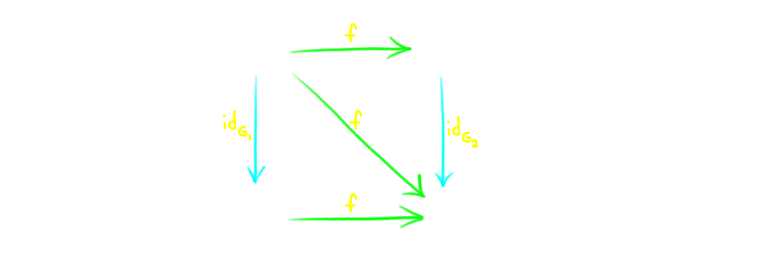
1. Опишем все гомоморфизмы из \(\mZ\) в себя.
Для каждого целого числа \(k\) функция \(f_k : \mZ \to \mZ\) определённая как
\[f_k(m) = k\cdot m\] является гомоморфизмом. Других гомоморфизмов из \(\mZ\) в себя не существует.
Доказательство того, что каждое \(f_k\) является гомоморфизмом, проверяется тривиально:
\[f_k(m + n) = k(m+n) = k\cdot m + k\cdot n = f_k(m) + f_k(n),\]
\[f_k(-m) = k\cdot(-m) = -(k\cdot m) = -f_k(m).\]
Теперь пусть \(f : \mZ \to \mZ\) — гомоморфизм. Пусть \(k = f(1)\). Тогда, из-за свойств гомоморфизма мы
имеем
для любого натурального числа \(n\)
Аналогично, из того, что \(f(-1) = -f(1) = -k \) следует, что \(f(n) = k\cdot n\) для любого целого \(n\).
Значит наш гомоморфизм равен \(f_k\)!
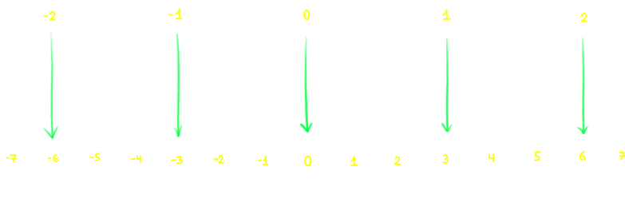
Докажите, что для любой группы \(G\) гомоморфизмов из \(\mZ\) в \(G\) "столько же", сколько
элементов в группе \(G\). А именно, каждому элементу \(g\), соответствует гомоморфизм \(f_g\) заданные уравнением
\[f_g(n) = g^n,\]
все такие гомоморфизмы различны и других гомоморфизмов нет.
2. Предыдущий пример показывал определённое универсальное свойство свободной группы с одним порождающим.
Попытаемся обобщить его для группы с двумя порождающими. Что такое гомоморфизм \(f: \Fr_2 \to G\)?
В группе \(Fr_2\) существует два порождающих: \(a\), \(b\). Пусть \(g_a = f(a)\), \(g_b = f(b)\).
Тогда это однозначно определяет куда обязаны перейти все остальные слова из букв \(a\) и \(b\).
Беря любое слово, мы всегда можем представить как произведение отдельных однобуквенных слов, а значит, пользуясь
правилом гомоморфизма мы знаем, что его образ будет равен произведению образов соответствующих групп. Например,
Значит, любой гомоморфизм однозначно задаётся элементами \(g_a, g_b\). Значит мы получаем замечательное
взаимно-однозначное соответствие:
\[ \{ Гомоморфизмы \ f: \Fr_2 \to G \} \leftrightarrow \{ Функции\ f:\{a, b\} \to G \}. \]
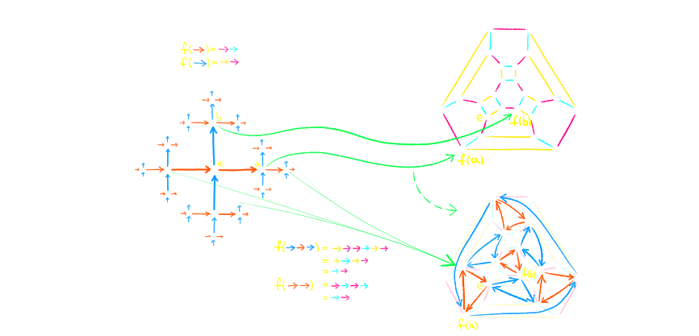
В правом графе все стрелки двухсторонние, поэтому, чтобы не загромождать рисунок, они не нарисованы
Для тех, кому интересно.
Свойство, которое мы сформулировали в предыдущем примере называется сопряжением.
Вообще говоря мы можем увидеть более общую картину. Сейчас мы живём в мире групп. Можно представить себе,
что группы являются некоторыми островками, а между ними у нас построены мосты — гомоморфизмы.
Аналогично есть другой мир — мир множеств. Там островками будут множества, а мостами будут
обычные функции. Мы умеем переходить из одного мира в другой следующими способами:
От группы \(G\) мы можем перейти к множеству \(\Forget(G)\), просто взяв те же самые элементы и "забыв" про то,
что на них была введена какая-то операция. От множества \(S\) мы можем перейти к группе \(\Free(S)\) —
свободной группе, порождённой множеством \(S\). В этом случае мы начинаем считать элементы множества \(S\) как
"буквы", и элементы нашей группы будут всевозможные конечные слова из этих букв и "обратных" к ним.
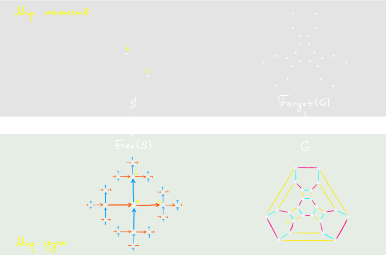
В результате наше сопряжение будет выглядеть в общем случае так: для любой группы \(G\) и для любого множества
\(S\), функции ("мостики" в мире множеств) вида \(f : S \to \Forget(G)\) взаимооднозначно соотвествуют
гомоморфизмам \(f' : \Free(S) \to G \):
\[ \{ Функции \ f: S \to \Forget(G) \} \leftrightarrow \{ Гомоморфизмы\ f':\Free(S) \to G \}. \]
Мы увидим похожий пример в топологии. В общем виде мы это будем изучать в курсе по теории категорий.
3. Мы уже встречались с тем, что две группы могут быть "одинаковы". Теперь мы можем строго сформулировать что
это означает. Начнём с примера. Рассмотрим группы \(\mZ/2 \times \mZ/3\) и \(\mZ/6\). Рассмотрим следующие
два гомоморфизма: \(f: \mZ/2 \times \mZ/3 \to \mZ/6 \) и \(g: \mZ / 6 \to \mZ/2 \times \mZ/3\), определяемые
следующими уравнениями:
\[f( (1, 1) ) = 1, \]
\[g( 1 ) = (1, 1). \]
Т.к. \((1,1)\) и \(1\) являются порождающими элементами для соответствующих групп, мы можем определить чему равны
\(f\) и \(g\) на остальных элементах. Например:
\[g(4) = g(1 + 1 + 1 + 1) =\]
\[= g(1) + g(1) + g(1) + g(1) = \]
\[= (1, 1) + (1, 1) + (1, 1) + (1, 1) = \]
\[= (0, 1).\]
Можно заметить, что эти два гомоморфизма взаимообратны, т.е. \(g\) отменяет \(f\) и наоборот. Т.е.
\[f \circ g = \id_{\mZ/6},\]
\[g \circ f = \id_{\mZ/2 \times \mZ/3}.\]
Когда гомоморфизмы обладают такими свойствами они имеют специальное название.
Гомоморфизм \(f : G \to H\) называется изоморфизмом, если существует обратный к нему гомоморфизм \(g: H \to
G\), т.е. такой, что
\[ g \circ f = \id_G, \]
\[ f \circ g = \id_H. \]
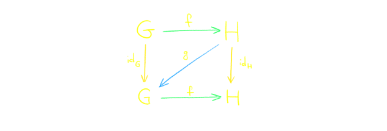
Группы, между которыми существует изоморфизм, называются изоморфными. Обозначение:
\[ G \cong H. \]
Докажите, что изоморфные группы неотличимы с точки зрения мира теории групп. Это означает, что
если \(G_1 \cong G_2\), и \(H\) — произвольная группа, то существует взаимно-однозначное соответствие между
гомоморфизмами \(G_1 \to H\) и гомоморфизмами \(G_2 \to H\). Аналогичное соответствие есть для гомоморфизмов из
\(H\) в эти две группы.
Изоморфные группы обладают всегда одними и теми же свойствами. Обычно, в теории групп, все группы рассматривают с
точностью до изоморфизма.
Строго докажите, что все группы из а) одного; b) двух c) трёх элементов изоморфны. Докажите что
существует только две неизоморфные группы из четырёх элементов.
Докажите, что для любого простого числа \(p\) существует единственная, с точностью до изоморфизма,
группа из \(p\) элементов.
3.
Отображение \(exp : \mR \to \mR_{> 0}\):
\[exp(x) = e^x\]
является гомоморфизмом из группы вещественных чисел с операцией сложения, в группу положительных вещественных
чисел с операцией умножения т.к.
\[e^{x + y} = e^x \cdot e^y.\]
Мало того, это отображение является изоморфизмом, обратное для него — натуральный логарифм:
\[\ln(e^x) = x, \forall x \in \mR,\]
\[ e^{\ln(x)} = x, \forall x \in \mR_{> 0}. \]
Аналогично вместо \(e\) мы можем подставить любое положительное число.
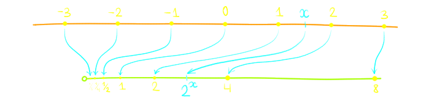
Пример экспоненты для показателя \(2\)
Нам интересно было бы понять общее поведение гомоморфизмов. Рассмотрим следующий
пример: \(f:\mZ/4 \to \mZ/4,\) \[f(n) = 2 \cdot n \ (\text{mod } 4).\]
Иными словами, \(0\) и \(2\) переходят в \(0\), а \(1\) и \(3\) переходят в \(2\).
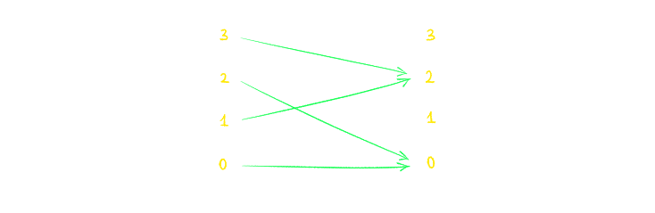
Мы видим, что мы теряем некоторую
информацию о группе — часть элементов становятся нейтральным элементом (иначе говоря, они "слипаются" в один).
Также мы видимо, что в некоторые элементы мы никогда не попадаем (в \(1\) и \(3\)). Эти две особенности описываются
следующими характеристиками:
Пусть \(f : G \to H\) — гомоморфизм. Ядром \(f\) называется множество \(\ker(f)\) тех элементов,
которые
переходят в нейтральный элемент. Т.е.
\[\ker(f) = \{ g \in G | f(g) = e \}. \]
Образом \(f\) называется множество тех элементов \(\im(f)\), которые можно получить посредством \(f\), т.е.
\[\im(f) = \{ h \in H | \exists g \in G : f(g) = h\}. \]
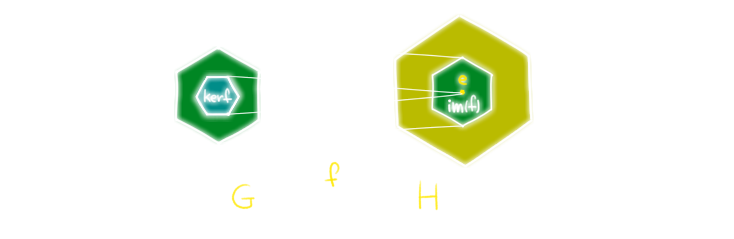
Докажите, что ядро всегда является нормальной подгруппой: \[\ker(f) \normal G.\]
Докажите, что образ всегда является подгруппой:
\[\im(f) < G.\]
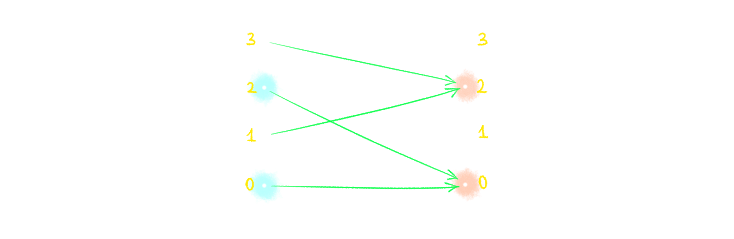
Ядро и образ для гомоморфизма их предыдущего примера.
Ядро и образ очень тесно связаны:
Теорема (первая теорема о гомоморфизме).
Если \(f : G \to H\) — гомоморфизм, то \[ \im(f) \cong G / \ker(f).\]
Вспомним, что такое факторгруппа \(G/\ker(f)\). Она состоит из
элементов \([g]\), где \([g_1] = [g_2]\) если, и только если \( g_1 = g_2 \cdot k \) для какого-то элемента
\(k \in \ker(f)\). Изоморфизм строится следующим способом:
Для любого элемента \([g]\) определим \[f_*([g]) = f(g) \in H.\] Для любого элемента \(h \in \im(f)\) возьмём
любой
прообраз этого элемента в \(G\), т.е. такой \(g\), что \(f(g) = h\) и определим
\[f_*\inv(h) = [g] \in G/\ker(f).\]
Теперь нужно решить три простых упражнения: показать что оба этих отображения корректны (т.е. не зависят от
выбора
конкретных представителей), являются гомоморфизмами (т.е. уважают операции в группах) и, наконец-то,
взаимообратны.
Я покажу здесь лишь последнее:
если \(h \in \im(f)\), то существует \(g\) такой, что \(f(g) = h\) и, по определению
\[ f_*(f_*\inv(h)) = f_*([g]) = f(g) = h.\]
Аналогично, если \(g\in G\), то для \(h = f(g)\), \(f_*\inv(h) = [g]\), поэтому
Итак, любой гомоморфизм стягивает часть элементов в ноль и вкладывает результат как подгруппу. В частности у нас
немедленно возникают два крайних случая — когда никакие элементы не склеиваются и когда все элементы имеют
прообраз. Это приводит к следующим определениям.
Пусть \(f : G \to H\) — гомоморфизм.
\(f\) называется инъективным, если его ядро состоит только из нейтрального элемента:
\[\ker(f) \cong * .\]
\(f\) называется сюрьективным, если его образ совпадает со всей группой:
\[\im(f) = H .\]
\(f\) называется биективным, если он инъективен и сюрьективен.
Замечание. Мы немедленно получаем следствие из предыдущей теоремы: биективные гоморфизмы являются
изоморфизмами (и наоборот). Если \(f : G \to H\) биективен, то:
\[G \cong G/* \cong G/\ker(f) \cong \im(f) = H.\]
Также, мы видим следующее — любой инъективный морфизм является, по сути, вложением группы как подгруппы, а
любой сюрьективный морфизм — это просто факторизация.
Докажите, что любой гомоморфизм распадается в композицию сюрьективного и инъективного
гомоморфизмов.
Порождающие и соотношения
В конце предыдущей лекции мы рассматривали порождающие множества для групп. Также мы выразили идею, что
любая группа \(G\) может быть получена с помощью склейки элементов свободной группы. Сейчас я хочу строго
формализовать эту мысль.
Рассмотрим любимую нами группу \(\mZ/n\). Мы знаем, что у нее есть один порождающий \(a = 1\). Поэтому эта группа
изоморфна следующей группе:
\[\mZ/n \cong \{e, a, a^2, ..., a^{n-1}\}, \]
где \(a^n = e\). Такую группу обозначают так:
\[ \la a | a^n \ra .\]
В таких обозначениях \(a\) это порождающий, а \(a^n\) — это соотношение. Строим мы её следующим образом:
мы берём свободную группу с одним порождающим \(a\), а затем говорим, что элемент \(a^n\) должен быть
тривиальным. Иначе говоря мы "склеиваем" элемент \{a^n\} с нейтральным. Мы знаем, что склейка в теории групп
выражается идеей факторизации. Но для того, чтобы так сделать, нам нужна какая-то нормальная подгруппа, а пока у
нас только один элемент. Поэтому мы должны сгенерировать "минимальную" нормальную подгруппу, которая содержит
наше слово.
Докажите, что пересечение любого числа нормальных подгрупп является нормальной подгруппой.
Иными словами, если \(N_\alpha \normal G\), \(\alpha \in \mcI\), где \(\mcI\) — некоторое
(может быть бесконечное) множество индексов, то
\[\bigcap_{\alpha\in\mcI} N_\alpha \ \normal G.\]
Пусть \(G\) — группа, а \(R\subset G\) — произвольное подмножество.
Нормальная группа, порождённая множеством \(R\) это "минимальная" нормальная подгруппа, которая содержит
\(S\), иными словами это пересечение всех нормальных подгрупп, которые содержат \(S\):
\[\mcN(S) = \bigcap_{N \normal G, R \subset N} N\]
Например, если дана группа \(\mZ\) и \(R = \{k\}\), то \(\mcN(R) = k \cdot \mZ\). Пользуясь этим мы, наконец-то,
можем определить группу, заданную с помощью порождающих и соотношений:
Пусть \(S\) — множество, а \(R\subset \Fr(S)\) — произвольное подмножество слов
свободной группы, порожденной \(S\). Тогда группой, заданной порождающим множеством \(S\) и
соотношениями \(R\) называется группа
\[\la S | R\ra = \Fr(S)/\mcN(R).\]
Теперь становится понятен строгий смысл примера выше:
\[\la a | a^n \ra = \Fr(a)/\mcN(\{a^n\}) = \]
\[ = \{..., a\inv, e, a, a^2, ...\} / \{..., a^{-n}, e, a^n, a^{2n}, ...\}.\]
В частности, видно, что \(\mZ / n \cong \la a | a^n \ra \).
Докажите, что
\[\mZ \times \mZ \cong \la a, b | aba\inv b\inv\ra.\]
Иными словами, \(\mZ \times \mZ\) это свободная группа, которой добавили одно соотношение — коммутативность.
Действительно, \(aba\inv b\inv\ = e\) это тоже самое, что \(ab = ba\). Поэтому \(\mZ \times \mZ\) часто называется
свободной абелевой группой ранга \(2\).
Замечание. Нормальные подгруппы вообще могут быть достаточно большими. Например, рассмотрим
группу \(\la a, b\ra \cong \Fr_2\). Что такое нормальная подгруппа, порождённая элементом \(a\)? Очевидный вариант
\[\la a \ra = \{..., a\inv, e, a, a^2, ...\}\]
не подходит, т.к. это не является нормальной подгруппой (например элемент \(bab\inv\) ей принадлежит ей, а значит
условие нормальности не выполняется). Для того чтобы образовать нормальную подгруппу, требуется бесконечное число
порождающих! А именно, \(\mcN(a)\) порождается элементами вида \(b^nab^{-n}\) для всех целых \(n\).
Более точно, элементы этой группы это в точности те слова, в которых буква \(b\) и \(b\inv\) встречается одно и
то же число раз. При этом фактор по этой группе это просто свободная группа с порождающим \(b\):
\[\la a, b | a \ra \cong \la b \ra \cong \mZ.\]
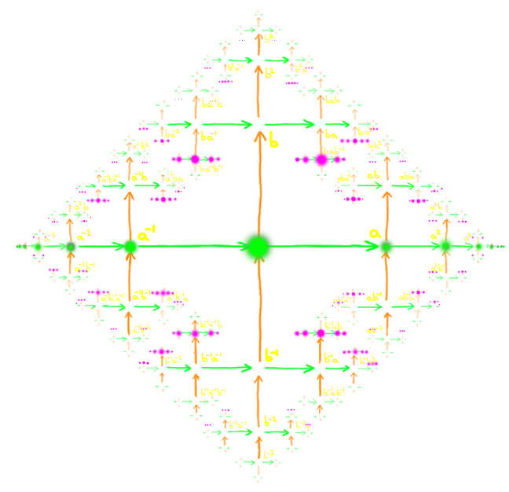
Зелёные элементы обозначают подгруппу, порождённую элементом \(a\), тогда как фиолетовые —
нормальную подгруппу, порождённую \(a\).
Любая группа может быть задана в качестве порождающих и соотношений:
Любая группа \(G\) изоморфна \(\la S | R \ra\) для некоторых \(S, R\).
Возьмём в качестве порождающего множества \(S\) множество "букв" \(a_g\) для каждого элемента \(g\in G\):
\[S = \{a_g | g\in G\}.\]
В качестве соотношений просто возьмём все возможные пары элементов \(g_1, g_2\) и сопоставим им соотношение
\(a_{g_1}a_{g_2}a_{g_1g_2}^{-1}\) (т.е. мы явно скажем, что \(a_{g_1}a_{g_2} = a_{g_1g_2}\)):
\[R = \{a_{g_1}a_{g_2}a_{g_1g_2}^{-1} | g_1, g_2 \in G\}.\]
Тогда легко увидеть, что отображение \(f : G \to \la S | R \ra\),
\[f(g) = [a_g]\]
является изоморфизмом.
Под конец этой лекции хочется сказать пару слов о представлении групп в виде порождающих и соотношений. С одной
стороны, такое представление возникает достаточно часто, особенно когда мы обращаемся к топологии. С другой стороны,
если дано представление группы в таком виде, по нему достаточно сложно понять свойства группы. Иногда даже
непонятно,
сколько в ней элементов! Вот несколько примеров:
Тривиальная группа имеет множество весьма нетривиальных представлений. Например
\[ * \cong \la a | a^{5}, a^{7} \ra. \]
Вообще говоря вместо \(5\) и \(7\) можно было бы взять любые два взаимно простых числа.
\[* \cong \la a, b | aba\inv b\inv, a^nb^m, a^lb^k \ra,\]
где \(nk - ml = \pm 1\).
Пусть \[ S = \{a_1, .., a_m\}, \]
\[R = \{x^m | x - слово \ из \ букв \ a_1, ..., a_n\}.\]
Тогда группа \( \la S | R \ra \) это "наиболее свободная" группа с \(n\) порождающими, где любой элемент в
степени \(m\) тривиален. Вопрос, является ли эта группа конечной или бесконечной для данных \(n\) и \(m\) до сих
пор не решён.
Пусть дана произвольная группа \(G = \la S | R \ra \). Пусть дано слово \(w\) из порождающих символов. Можем ли
мы всегда найти алгоритм, который определяет равно ли это слово тривиальному элементу?
Например, для группы \(\la a | a^n \ra\) это легко определить: все слова имеют вид \(a^k\) и они равны
тривиальному элементу если и только если \(k\) делится на \(n\). Однако для других групп эта задача становится
сложнее. Вообще говоря, доказано, что существуют группы, для которых эта задача не решаема! Т.е. не существует
такого алгоритма, которых бы определил бы за конечное время тривиально ли слово или нет. Общее название этой
проблемы ‐ Word Problem
Явный пример.
Для такой группы не существует алгоритма, который бы определял тривиальность слова за конечное время: